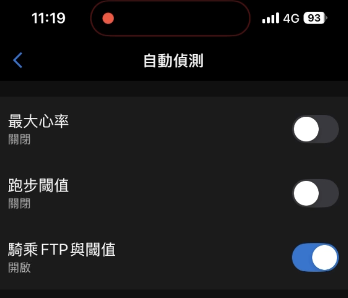

手動設定好最大心率之後，記得把「自動偵測」關掉
在今年的實體訓練營中，先修課那天上午測完最大心率、下午把數字填進 RQ 與跑錶之後，我還會請學員多做一個動作：把跑錶上「最大心率」的「自動偵測」功能關掉。
Garmin 這個功能出廠預設是打開的。開著的時候，手錶會在你跑步的過程中自動偵測並更新你的最大心率。
也就是說，學員早上盡全力才跑出來且親手填進去的那個數字，之後可能會被手錶自己改掉，而且不會問你同不同意。
這個自動填進去的數字，不用全力跑就會更新，它是演算法推估的值，背後靠的是某個族群、某個實力區段的平均關係。但人跟人之間的差異很大，它算出來的最大心率，不一定是你真正跑得出來的最大心率。
算低了還好，頂多練得保守一點；算高了就麻煩，每一區的邊界都跟著往上推，錶上顯示你在有氧區間，身體其實已經跑在更高的強度上。
所以我的建議很直接：把它關掉。
▎打開自動偵測會發生什麼事
跑完後按下停止、選擇儲存活動的那一刻，錶面上會跳出一行短暫的提示，例如「偵測到新的最大心率：190 bpm」。那一行只是通知，畫面上沒有「要不要接受」可以選，提示跳出來的同時，手錶與 Garmin Connect 裡的最大心率就已經被換掉了。
練完只想趕快存檔回家的那個當下，這行提示很容易被滑過去，連按幾下確認鍵就過了。等到後來覺得心率區間怪怪的，才回頭發現最大心率早就不是自己填的那個數字。
▎關掉的位置
▹ 手錶設定 → 使用者資料 → 心率與功率區間 → 自動偵測 → 最大心率
進去之後把「最大心率」的開關關掉，建議乳酸閾值那一項也一起關，再回到上一層，把最大心率改成自己實測的值。

（附圖為 Garmin Connect App 的「自動偵測」頁面，圖中「最大心率」與「跑步閾值」都已關閉。）
Forerunner 255、265、570、955、965、970 與 fenix 系列的路徑相同，部分機種進去的第一層直接是「使用者資料」，選單名稱也可能隨韌體版本微調……找不到的話就在「使用者資料」底下一層一層看，它會在心率區間設定那一區（比較舊的機型不會自動偵測，所以沒有這個選項）。
▎我認為智慧應該用在分析上，而非用在參數的設定上
跑錶愈來愈聰明，並非全是好消息。
聰明到一個程度之後，它會開始替你決定一些本來應該由你親自去量測的數據。最大心率、乳酸閾值心率、安靜心率，這幾個數字現在都可以由演算法推估出來。
問題是，這幾個數字都不適合用演算法去推算！
我個人會把身體上的數據分成兩類：
▹ 一類像身高、體重、血型、安靜心率、最大心率、某個距離的 PB，它在認真訓練的一段期間內是穩定的，它們是這位跑者的底層數據，我把它們叫做「個人參數」。
▹ 另一類像是訓練時的心率、配速、步頻，在跑步的每一刻都在變動，是「個人變數」。
個人參數只能親自測量。這種量一次就有答案的數字，沒有必要交給演算法去推算。
❝ 最大心率一定要實際跑出來再手動填入，不能交給演算法所謂的「自動偵測」。太過自動，後面所有的數據都會跟著偏掉。 ❞
演算法該做的工作是：把你跑步時一筆一筆記錄下來的心率、配速、步頻與功率這些變數，做人腦算不動的統計與分析，再據此規劃接下來的訓練。這件事它做得比人類好。
推估不在這個範圍裡。你這一分鐘跑 5 分速，不代表下一分鐘就拉得到 4 分半；體能指數到了某個水準，也不代表 10 公里就一定跑得進 50 分。
這一類的預測拿來當參考可以，拿來當訓練的基準就不行。配速要用你已經跑出來的 PB 去算，不能用還沒跑出來的目標成績去算；心率區間也一樣，要用實測的最大心率去算，用推估值算出來的每一區都會跟著偏掉。
「自動偵測最大心率」這個功能的用意並不壞，也確實方便，戴著錶跑幾次，最大心率就自動出現了，不必自己去測。只是它服務的對象是不想管這些細節的使用者。如果你在意細節與個人化區間的準確度，建議把它關掉。
我認為：
人工智慧／演算法要用在個人大數據的分析上，而非用在個人參數的設定上。
個人參數要自己實測、手動填入；
個人變數的分析可以交給演算法。
這樣分工才是科學化訓練的基礎。
📚 參考資料
▹ Garmin. (n.d.). Detecting performance measurements automatically. Forerunner 570 Series Owner's Manual. 連結
▹ Garmin. (n.d.). 設定您的心率區間. FORERUNNER 970 使用者手冊. 連結
💬 發佈後的留言與回覆
留言（一位跑者）： 「文章裡好像把「偵測到更高的心率就自動更新」和「靠統計和演算法計算」混淆了。如果是後者才比較有不準的問題（例如最簡單的演算法：220-年齡）。如果是前者，跑者在後續訓練跑出比測試時更高的心率，這時候更新最高心率沒有問題吧」
回覆（國峰）：
謝謝你的提醒。如你所說，如果「自動偵測」只是偵測到更高的心率就自動更新，那是沒有問題的，因為那仍然是實測出來的數字，把最大心率往上修正很合理。只是 Garmin 的自動偵測並沒有走這條路，這也造成了許多使用者的困擾，所以我才會寫這篇文章跟大家分享。
就我的理解，Garmin 的「最大心率自動偵測」比較接近你說的後者。它背後靠的是 Firstbeat 的專利演算法，把配速、心率變化、最大攝氧量與心率變異度等數據交叉比對之後，推估出一個理論上的最大心率上限。這也是為什麼不少跑者在輕鬆跑、或是沒有刻意拉高心率的訓練之後，手錶仍會跳出「偵測到新的最大心率」的通知。它比 220 減年齡複雜許多，但本質上仍然是推估值。
這篇文章想說明的正是這一點：在訓練上，用演算法推估來決定最大心率並不妥當，還是應該以自己實際跑出來的心率最大值為準，再手動填入。謝謝你點出這個分野，讓我有機會在這裡把它說得更清楚。
留言（另一位跑者）： 「多數人在99.9%的訓練根本跑不出最大心率，如果沒讓手錶推估，更難以設定區間跟安排閾值訓練」
回覆（國峰）：
你說得沒錯，多數跑者在平常的訓練中確實跑不到最大心率。不過訓練上使用的最大心率，不必是理論上那個絕對的最大值，只要用自己在高強度間歇或測驗中曾經跑出的最高心率就可以了。因為那是實際跑過的數字，用它來設定區間比較安全，也比較實用。之後若在訓練中跑出更高的數值，再手動更新上去就好，不必一步到位。
至於交給手錶推估，風險在於推估值可能偏高，甚至高到自己根本跑不出來的數字。這時候每一區的邊界都會跟著往上推，錶上看起來還在區間內，身體其實已經跑在更高的強度上。這幾年我替不少跑者實測過最大心率，演算法高估的情況並不少見，所以我才會建議以實測值為準。